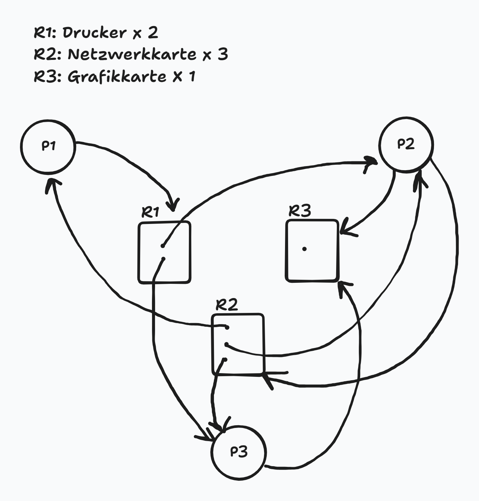

8 Blatt 8
Aufgabe 1
Allgemeiner Beweis: Es kann kein Deadlock auftreten
Gegeben sind:
- Ein Ressourcentyp mit insgesamt \(E = 4\) Instanzen,
- Drei Prozesse \(P_1, P_2, P_3\),
- Jeder Prozess kann maximal 2 Instanzen der Ressource anfordern.
Sei \(C_i\) die Anzahl der aktuell einem Prozess \(P_i\) zugeteilten Ressourceninstanzen, und \(R_i\) der verbleibende Bedarf, so dass gilt:
\[ C_i + R_i \leq 2 \quad \text{für alle } i = 1, 2, 3 \]
und
\[ \sum_{i=1}^{3} C_i \leq 4 \]
Es soll gezeigt werden, dass unter diesen Bedingungen kein Deadlock entstehen kann.
Fall 1: Mindestens ein Prozess wartet nicht Falls für ein \(i\) gilt: \(R_i = 0\), dann kann \(P_i\) sofort fertigstellen und bis zu 2 Ressourcen freigeben. Dadurch erhöht sich die Anzahl der verfügbaren Instanzen \(A\), was anderen wartenden Prozessen die Fortsetzung erlaubt. Durch Induktion führt dies zu einer vollständigen Abarbeitung aller Prozesse. Ein Deadlock ist somit ausgeschlossen.
Fall 2: Alle Prozesse warten auf Ressourcen Angenommen, jeder Prozess hält mindestens eine Instanz und fordert eine weitere an, also:
\[ C = \begin{bmatrix} 1 \\ 1 \\ 1 \end{bmatrix}, \quad R = \begin{bmatrix} 1 \\ 1 \\ 1 \end{bmatrix}, \quad A = \begin{bmatrix} 1 \end{bmatrix} \]
Dies ist die kritischste zulässige Konfiguration: Alle 4 Ressourcen sind verteilt (3 belegt, 1 frei), und jeder Prozess wartet auf eine weitere Instanz.
In diesem Fall kann das System dennoch einer Anfrage (z. B. von \(P_1\)) nachkommen, sodass dieser Prozess abschließen kann. Danach gibt er seine 2 gehaltenen Ressourcen frei, und \(A\) steigt auf 3. Damit können die verbleibenden Prozesse nacheinander ebenfalls fertigstellen. Es kommt also auch im schlimmsten Fall nicht zu einem Deadlock.
Schlussfolgerung In allen gültigen Konfigurationen – ob mindestens ein Prozess direkt fertigstellen kann oder alle warten – hat das System stets genug Ressourcen, um zumindest einem Prozess die Beendigung zu ermöglichen. Dadurch ist Fortschritt immer möglich, und eine zirkuläre Wartebedingung kann nie entstehen. Es folgt: Ein Deadlock ist unter den gegebenen Voraussetzungen ausgeschlossen.
Aufgabe 1b – Beispiel mit erfüllten Deadlock-Bedingungen, aber ohne Deadlock
Dieses Beispiel stammt direkt aus den Vorlesungsfolien und illustriert eine Systemkonfiguration, in der alle vier notwendigen Coffman-Bedingungen für einen Deadlock erfüllt sind, jedoch kein Deadlock vorliegt. Der Bankieralgorithmus bestätigt, dass der Zustand sicher ist.
Systemdefinition
Ressourcentypen: \(R_1\) und \(R_2\) Gesamtressourcenvektor: \(E = (2, 2)\) Verfügbarkeitsvektor: \(A = (0, 0)\)
Alle Ressourcen sind momentan vollständig vergeben.
Zuteilungsmatrix \(C\):
\[ C = \begin{bmatrix} 0 & 1 \\ 1 & 0 \\ 1 & 0 \\ 0 & 1 \end{bmatrix} \]
\(P_1\) hält \(R_2\), \(P_2\) und \(P_3\) halten jeweils \(R_1\), \(P_4\) hält \(R_2\).
Anforderungsmatrix \(R\):
\[ R = \begin{bmatrix} 1 & 0 \\ 0 & 0 \\ 0 & 1 \\ 0 & 0 \end{bmatrix} \]
\(P_1\) fordert \(R_1\), \(P_3\) fordert \(R_2\).
Überprüfung der Coffman-Bedingungen
1. Wechselseitiger Ausschluss: Ressourcen können nicht gemeinsam genutzt werden. 2. Hold-and-Wait: Prozesse halten Ressourcen und fordern weitere an (z. B. \(P_1\) hält \(R_2\), fordert \(R_1\)). 3. Keine Präemption: Ressourcen können Prozessen nicht zwangsweise entzogen werden. 4. Zyklisches Warten: Es existiert ein Zyklus im Ressourcen-Wartegraphen: \(P_1 \rightarrow R_1 \rightarrow P_3 \rightarrow R_2 \rightarrow P_1\).
→ Alle vier Bedingungen sind erfüllt.
Anwendung des Bankieralgorithmus
Schritt Prozess \(i\) \(R_i\) Verfügbar \(A\) Belegt \(C_i\) Markierte Prozesse (P1, P2, P3, P4) 1 1 (1, 0) (0, 0) (0, 1) × × × × 2 2 (0, 0) (0, 0) (1, 0) × ✓ × × 3 3 (0, 1) (1, 0) (1, 0) × ✓ × × 4 4 (0, 0) (1, 0) (0, 1) × ✓ × ✓ 5 1 (1, 0) (1, 1) (0, 1) ✓ ✓ × ✓ 6 3 (0, 1) (1, 2) (1, 0) ✓ ✓ ✓ ✓ Nach jedem Schritt wird der Verfügbarkeitsvektor \(A\) aktualisiert, sobald ein markierter Prozess seine gehaltenen Ressourcen freigibt. Am Ende sind alle Prozesse markiert → der Zustand ist sicher.
Schlussfolgerung
Trotz erfüllter Coffman-Bedingungen und zyklischer Abhängigkeiten liegt kein Deadlock vor, da der Bankieralgorithmus eine vollständige Abarbeitungsreihenfolge findet. Dieses Beispiel erfüllt somit exakt die Aufgabenstellung: Ein System mit potenzieller Deadlock-Struktur, das sich jedoch als sicher herausstellt.
Aufgabe 2
Beschreiben Sie ein Szenario, in dem ein Deadlock entstehen kann:
Ein Deadlock kann entstehen, wenn die beiden Prozesse P1 und P2 die Ressourcen A und B in entgegengesetzter Reihenfolge anfordern, und beide jeweils bereits eine Ressource belegt haben, während sie auf die zweite warten.
Ablauf eines möglichen Szenarios:
- P1 startet zuerst und führt
wait(sem_A)aus → Ressource A wird gesperrt. - P2 startet kurz danach und führt
wait(sem_B)aus → Ressource B wird gesperrt. - Nun versucht P1,
wait(sem_B)auszuführen, blockiert aber, da B bereits durch P2 gesperrt ist. - Gleichzeitig versucht P2,
wait(sem_A)auszuführen, blockiert aber, da A durch P1 gehalten wird.
- Beide Prozesse warten nun jeweils auf eine Ressource, die vom jeweils anderen gehalten wird.
- Keiner kann weitermachen oder Ressourcen freigeben.
- Dies ist ein klassischer Deadlock-Zustand.
Dieses Szenario entspricht genau dem Beispiel auf Folie 15 der Vorlesung 15, bei dem zwei Prozesse in dieser Weise mit
wait(A)/wait(B)agieren. Der Deadlock tritt bei einer ungünstigen Ausführungsreihenfolge auf.- P1 startet zuerst und führt
Erklären Sie präzise, welche der notwendigen Bedingungen für einen Deadlock hier erfüllt sind.
In der dargestellten Situation (siehe Teil a) sind alle vier Coffman-Bedingungen erfüllt, die gemeinsam notwendig für das Entstehen eines Deadlocks sind:
- Wechselseitiger Ausschluss (Mutual Exclusion) Beide Ressourcen (A und B) sind durch binäre Semaphore geschützt, d. h. sie können immer nur von einem Prozess gleichzeitig verwendet werden.
- Hold-and-Wait (Belegen und Warten) Beide Prozesse belegen eine Ressource (z. B. P1 hält A, P2 hält B) und fordern gleichzeitig eine weitere Ressource an, auf die sie warten.
- Keine Präemption (No Preemption) Ressourcen können nicht gewaltsam entzogen werden. Ein Prozess gibt eine Ressource nur durch ein
signal()freiwillig frei — aber das geschieht erst nach der kritischen Sektion, also nicht während des Wartens. - Zyklische Wartebedingung (Circular Wait) Es entsteht ein Zyklus im Ressourcen-Wartegraphen:
- P1 hält A und wartet auf B,
- P2 hält B und wartet auf A. → Zyklus: \(P1 \rightarrow B \rightarrow P2 \rightarrow A \rightarrow P1\)
\(\Rightarrow\) Alle vier notwendigen Bedingungen für einen Ressourcen-Deadlock sind in diesem Szenario gleichzeitig gegeben. Das erklärt, warum hier ein Deadlock möglich ist, wenn die Prozesse in genau dieser Reihenfolge ausgeführt werden.
Schlagen Sie eine einfache konzeptionelle Änderung vor, die das Risiko eines Deadlocks in diesem Beispiel beseitigt.
Eine einfache, aber sehr effektive konzeptionelle Änderung besteht darin, eine einheitliche Reihenfolge für die Ressourcenzugriffe festzulegen.
Konkret: Beide Prozesse sollen die Ressourcen immer in derselben Reihenfolge anfordern — zum Beispiel:
wait(sem_A);
wait(sem_B);
// kritische Sektion
signal(sem_B);
signal(sem_A);Sowohl P1 als auch P2 würden dann zuerst sem_A und danach sem_B anfordern.
Durch die feste Anforderungsreihenfolge wird die zyklische Wartebedingung (circular wait) prinzipiell ausgeschlossen. Denn:
- Wenn ein Prozess bereits
sem_Abelegt, ein anderer Prozess aber aufsem_Bwartet, wird dieser niemals gleichzeitigsem_Aanfordern, da ersem_Aja zuerst anfordern müsste. - Somit kann kein zyklisches Warten entstehen.
\(\Rightarrow\) Die Einführung einer globalen, konsistenten Reihenfolge beim Zugriff auf mehrere Ressourcen ist eine einfache, konzeptionelle Methode zur Vermeidung von Deadlocks. Sie unterläuft gezielt eine der vier Deadlock-Bedingungen — nämlich die zyklische Wartebedingung.
Aufgabe 4
RAG:

RAG E, A, R, und C:
- Gesamtressourcenvektor: \(E = (2, 3, 1)\)
- Verfügbarkeitsvektor (initial): \(A = (0, 0, 1)\)
- Belegungsmatrix \(C\):
\[ C = \begin{bmatrix} 0 & 1 & 0 \\ 1 & 1 & 0 \\ 1 & 1 & 0 \end{bmatrix} \]
- Anforderungsmatrix \(R\):
\[ R = \begin{bmatrix} 1 & 0 & 0 \\ 0 & 1 & 1 \\ 0 & 0 & 1 \end{bmatrix} \]
Durchführung des Bankieralgorithmus
Ausführungstabelle des Bankieralgorithmus:
Schritt Prozess \(i\) \(R_i\) \(A\) \(C_i\) Anfrage erfüllbar? Markiert 1 1 (1, 0, 0) (0, 0, 1) (0, 1, 0) Nein × × × 2 2 (0, 1, 1) (0, 0, 1) (1, 1, 0) Nein × × × 3 3 (0, 0, 1) (0, 0, 1) (1, 1, 0) Ja × × ✓ 4 1 (1, 0, 0) (1, 1, 1) (0, 1, 0) Ja ✓ × ✓ 5 2 (0, 1, 1) (1, 2, 1) (1, 1, 0) Ja ✓ ✓ ✓ Alle Prozesse konnten schrittweise markiert werden. Es existiert also eine vollständige sichere Ausführungsreihenfolge.
\(\Rightarrow\) Es liegt kein Deadlock vor.
Erklärung der Tabelle: Die folgende Tabelle zeigt Schritt für Schritt, wie der Bankieralgorithmus arbeitet:
- In jeder Zeile wird ein Prozess betrachtet.
- Wenn seine Ressourcenanforderung \(R_i\) durch den aktuellen Verfügbarkeitsvektor \(A\) erfüllbar ist, wird der Prozess markiert.
- Anschließend wird seine Ressourcenbelegung \(C_i\) zu \(A\) addiert (Ressourcenfreigabe nach Terminierung).
- Die nächste Zeile prüft erneut alle Prozesse, bis keine unmarkierten Prozesse mehr übrig sind.
Aufgabe 5
CPU-bound (rechenintensive) Prozesse führen lange Rechenoperationen mit wenigen I/O-Unterbrechungen aus. Sie profitieren von längerer CPU-Zuteilung ohne häufiges Umschalten, da Kontextwechsel mit Overhead verbunden sind (z. B. Speichern des Zustands, Leeren von Caches wie dem TLB).
I/O-bound (ein-/ausgabeintensive) Prozesse führen dagegen viele kurze Rechenphasen aus, gefolgt von häufigem Warten auf I/O-Geräte. Würde man diese Prozesse zu lange auf der CPU halten, würde man wertvolle CPU-Zeit verschwenden, da sie häufig blockieren. Sie profitieren daher von kurzen, aber schnellen Reaktionszeiten, sodass sie nach Beendigung ihrer I/O-Phasen zügig wieder eingeplant werden können.
Ein intelligenter Scheduler erkennt diese Unterschiede und trifft darauf basierende Entscheidungen, um die Systemauslastung zu optimieren und sowohl Rechenzeit effizient zu verteilen als auch I/O-Wartezeiten zu minimieren.
Aufgabe 6
Gantt-Diagramme für verschiedene Scheduling-Strategien**
Gegeben sind fünf Prozesse mit folgenden CPU-Burst-Zeiten (in Millisekunden):
Prozess Burst-Zeit P1 10 P2 1 P3 2 P4 1 P5 5 FCFS (First-Come, First-Served)** Prozesse werden in ihrer Ankunftsreihenfolge vollständig abgearbeitet:
| P1 | P2 | P3 | P4 | P5 | 0 10 11 13 14 19SJF (Shortest Job First)** Prozesse werden nach aufsteigender Burst-Zeit sortiert und dann nacheinander ausgeführt:
| P2 | P4 | P3 | P5 | P1 | 0 1 2 4 9 19RR (Round-Robin), Quantum = 1 ms** Prozesse werden in Zeitscheiben von 1 ms ausgeführt und nach jedem Quantum ans Ende der Queue gesetzt. Ergebnis bis Zeit 16 ms:
| P1 | P2 | P3 | P4 | P5 | P1 | P3 | P5 | 0 1 2 3 4 5 6 7 8 | P1 | P5 | P1 | P5 | P1 | P1 | P1 | P1 | 8 9 10 11 12 13 14 15 16 | P1 | P1 | P1 | 16 17 18 19
Durchlaufzeiten:
Die Durchlaufzeit eines Prozesses ist definiert als:
\[ \text{Durchlaufzeit} = \text{Fertigstellungszeit} - \text{Ankunftszeit} \]
Da alle Prozesse bei \(t = 0\) starten, entspricht die Durchlaufzeit hier einfach der Zeit der letzten Ausführung eines Prozesses im jeweiligen Gantt-Diagramm.
FCFS (First-Come, First-Served)
Gantt-Diagramm:
| P1 | P2 | P3 | P4 | P5 | 0 10 11 13 14 19Prozess Durchlaufzeit \(P_1\) 10 \(P_2\) 11 \(P_3\) 13 \(P_4\) 14 \(P_5\) 19 SJF (Shortest Job First)**
Gantt-Diagramm:
| P2 | P4 | P3 | P5 | P1 | 0 1 2 4 9 19Prozess Durchlaufzeit \(P_1\) 19 \(P_2\) 1 \(P_3\) 4 \(P_4\) 2 \(P_5\) 9 RR (Round-Robin), Quantum = 1 ms**
Gantt-Diagramm:
| P1 | P2 | P3 | P4 | P5 | P1 | P3 | P5 | P1 | P5 | P1 | P5 | P1 | P1 | P1 | P1 | P1 | P1 | P1 | 0 1 2 3 4 5 6 7 8 9 10 11 12 13 14 15 16 17 18 19Fertigstellungszeitpunkte (letzte Ausführung pro Prozess):
- \(P_2\): endet bei t = 2
- \(P_4\): endet bei t = 4
- \(P_3\): endet bei t = 7
- \(P_5\): endet bei t = 14
- \(P_1\): endet bei t = 19
Prozess Durchlaufzeit \(P_1\) 19 \(P_2\) 2 \(P_3\) 7 \(P_4\) 4 \(P_5\) 14
Vergleich der Durchlaufzeiten:
Prozess FCFS SJF RR (Q = 1 ms) \(P_1\) 10 19 19 \(P_2\) 11 1 2 \(P_3\) 13 4 7 \(P_4\) 14 2 4 \(P_5\) 19 9 14 Wartezeit (Waiting Time)
Die Wartezeit berechnet sich aus:
\[ \text{Wartezeit} = \text{Durchlaufzeit} - \text{Burst-Zeit} \]
Die Burst-Zeiten (CPU-Bedarf) der Prozesse sind:
| Prozess | Burst-Zeit |
|---|---|
| \(P_1\) | 10 |
| \(P_2\) | 1 |
| \(P_3\) | 2 |
| \(P_4\) | 1 |
| \(P_5\) | 5 |
Berechnung der Wartezeiten je Strategie
FCFS
Prozess Durchlaufzeit Burst Wartezeit \(P_1\) 10 10 0 \(P_2\) 11 1 10 \(P_3\) 13 2 11 \(P_4\) 14 1 13 \(P_5\) 19 5 14 SJF
Prozess Durchlaufzeit Burst Wartezeit \(P_1\) 19 10 9 \(P_2\) 1 1 0 \(P_3\) 4 2 2 \(P_4\) 2 1 1 \(P_5\) 9 5 4 RR (Q = 1 ms)
Prozess Durchlaufzeit Burst Wartezeit \(P_1\) 19 10 9 \(P_2\) 2 1 1 \(P_3\) 7 2 5 \(P_4\) 4 1 3 \(P_5\) 14 5 9 Durchschnittliche Wartezeiten:
- FCFS:
Wartezeiten: 0, 10, 11, 13, 14
\[ \text{Summe} = 48,\quad \text{Durchschnitt} = \frac{48}{5} = 9{,}6\ \text{ms} \]
- SJF:
Wartezeiten: 9, 0, 2, 1, 4
\[ \text{Summe} = 16,\quad \text{Durchschnitt} = \frac{16}{5} = 3{,}2\ \text{ms} \]
- RR (Quantum = 1 ms):
Wartezeiten: 9, 1, 5, 3, 9
\[ \text{Summe} = 27,\quad \text{Durchschnitt} = \frac{27}{5} = 5{,}4\ \text{ms} \]
Vergleich – Durchschnittliche Wartezeit
Strategie Durchschnittliche Wartezeit FCFS 9,6 ms SJF 3,2 ms RR (Q=1) 5,4 ms \(\Rightarrow\)
SJF liefert die geringste durchschnittliche Wartezeit, da kurze Prozesse bevorzugt behandelt werden. Allerdings kann SJF zu Verhungern (Starvation) führen, wenn lange Prozesse ständig verdrängt werden. Round-Robin bietet bessere Fairness, aber höhere Gesamtlatenz.
Aufgabe 7
FCFS (First-Come, First-Served): Keine Gefahr von Verhungern, da Prozesse strikt in Ankunftsreihenfolge ausgeführt werden.
SJF (Shortest Job First): Gefahr von Verhungern besteht, da lange Prozesse durch immer neu ankommende kurze Prozesse dauerhaft verdrängt werden können.
SRTF (Shortest Remaining Time First): Ebenfalls anfällig für Verhungern, insbesondere für Prozesse mit langer verbleibender Laufzeit, da kürzere Prozesse bevorzugt werden.
RR (Round-Robin): Keine Gefahr von Verhungern, da alle Prozesse regelmäßig CPU-Zeit erhalten.
Multilevel Queue mit fixer Priorität: Hohe Verhungernsgefahr für Prozesse in unteren Prioritätsklassen, wenn ständig Prozesse mit höherer Priorität ankommen.